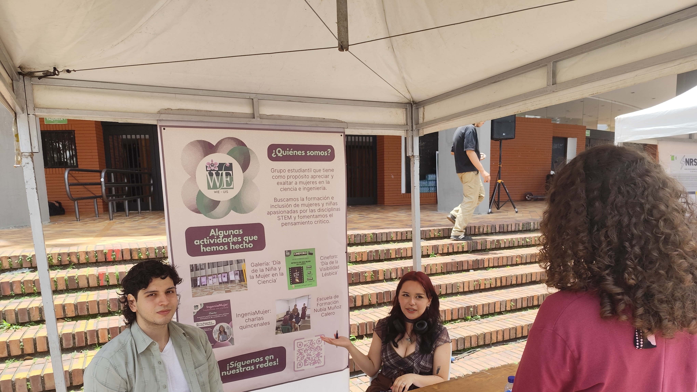
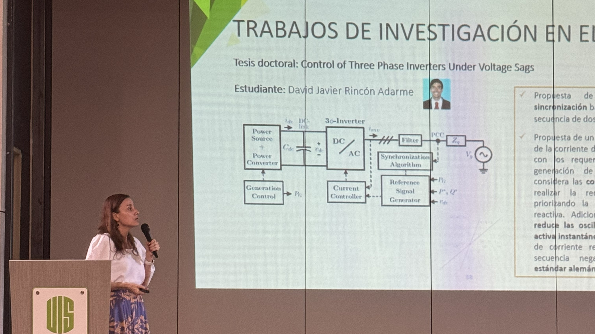
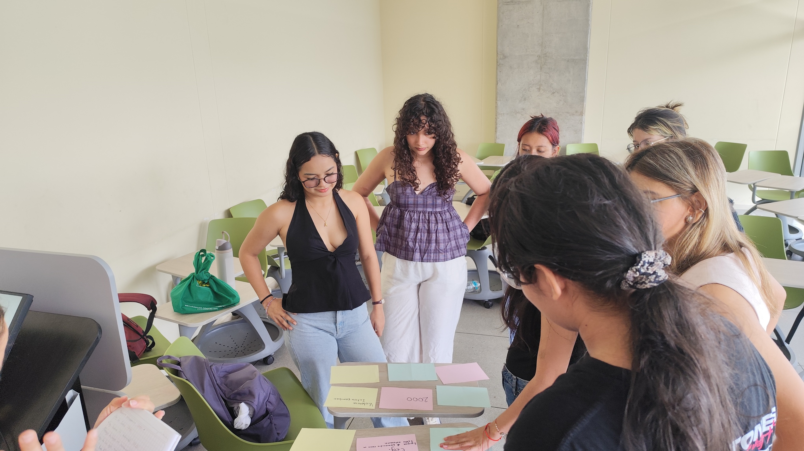
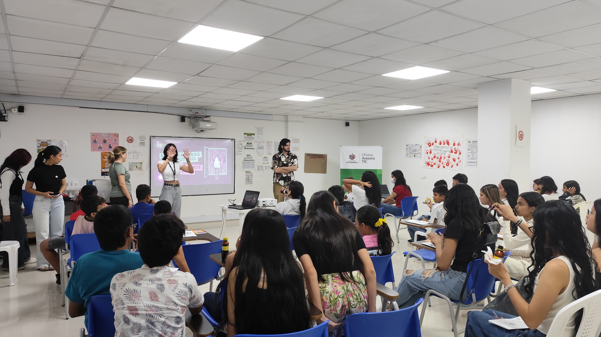
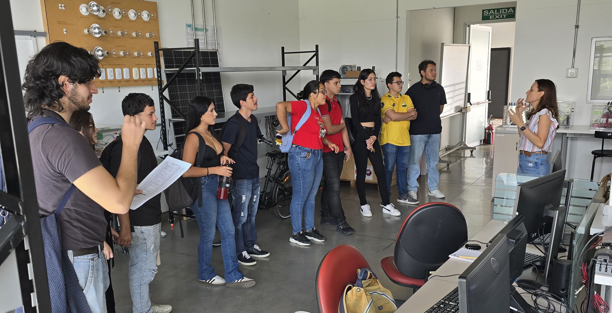

Our Mission
WIE UIS is a student group, affiliated to the IEEE UIS student branch, based in Bucamaranga that is creating and promoting spaces for women that are studying, researching or interested in STEM. We believe that a world where gender equality exists is possible, and we are taking actions to achieve it. We also recognize that in order to do so it's needed to understand the political, social and ideological reasons that created the disparity to begin with and the only way to do so is having critical thinking.
At WIE UIS we aim to create a community and a support net for women in STEM, but we welcome everyone into our group; we also believe that having a diversity of thought leads to equality.
About IEEE WIE
IEEE Women in Engineering (WIE) is one of the largest international professional organizations dedicated to promoting women engineers and scientists. As an IEEE WIE student chapter at UIS, we are part of a global network of professionals and students working toward the same goal.
Being part of IEEE gives our members access to resources, events, and a worldwide community of engineers and scientists.
Our Committees

Marketing commitee
The marketing commitee has the responsability of managing our social medias, as well as this webpage. This commitee usually films, edits and make content that contribute to our online presence and notifies the community about our activities.

Events commitee
The events commitee is in charge of coordinating the events that WIE UIS hold. Starting with contacting any guests, doing the logistics and finally, making sure that everything goes according to the plan.

NMC school commitee
The Nubia Muñoz Calero school commitee help us improve the critical thinking skills in aspiring new members of WIE UIS. They do this by designing a curriculum that informs the atendees about feminism, legislation in Colombia and how women are mistreated in different spaces.

Schools visits commitee
Academy shouldn't be exclusive to people who get to attend a college, that's why at WIE UIS we make visits to public high schools and public elementary schools. The schools visits commitee is in charge of designing engaging activities with the goal of getting young women interested in studying STEM-related fields.

IEEE commitee
The IEEE commitee was designated to facilitate the communication between WIE, IEEE, UIS' IEEE student branches and WIE UIS. The constant communication is important between us because our goals are very similar and we're always supporting each other.